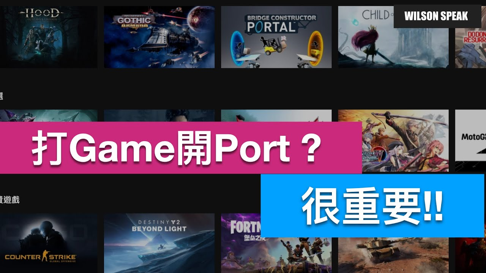

遊戲配對失敗就要開 Port？先看 NAT 和連線方向

原片發布 2019-01-22 · 點封面看原片。
遊戲找不到房間、朋友加入失敗，搜尋結果常會叫你「開 Port」。先別急著填一長串埠號：這個設定處理的是特定連入需求，得先確認遊戲怎麼連、你家的外網能不能收到連線。
這篇延伸自 Wilson 2019 年的 Port Forwarding 影片，補上雙重 NAT、CGNAT 和驗證方式。選單會隨路由器和韌體改變，先把原理弄清楚，再依遊戲與設備的官方說明設定。
能連出，不代表別人能直接連進來
家裡能開網頁、下載檔案，代表主動連出的路徑可用；某些多人遊戲或自架服務，還需要外部對指定主機發起連線。這是不同方向的需求，能連出並不保證外面能直接連進來。
家用 IPv4 NAT 常讓多台內部設備共用對外位址，並追蹤對應關係。未符合既有連線或轉送規則的入向封包，不會自然找到你要的主機。NAT 與防火牆是不同工作，雖然常在同一台家用路由器裡處理，仍不能混為一談。
NAT 類型是線索，不是所有卡頓的答案
主機或遊戲顯示的 NAT 類型可以當線索，但各平台的名稱與判定方式不同，不能把某台的數字直接對照另一家的標籤。先記下完整錯誤訊息，再看該平台官方說明。
若是畫面幀率低、延遲忽高忽低，還要查效能、訊號和外部服務。Port Forwarding 不會提高寬頻容量，也不能當成所有卡頓的解法。遊戲伺服器維護、帳號或版本問題，也可能讓配對失敗。
排查路徑示意。Port Forwarding 處理特定入向連線，不會增加頻寬。
先查遊戲官方要求，別抄整張陌生埠表
官方說明若確實要求轉送，先確認埠號、TCP 或 UDP、對應裝置，以及這項要求是連出還是連入。某份文件列了服務使用的埠，不代表清單中的每一項都必須做入向轉送。
再確認內部主機的位置與位址配置。可依設備文件使用 DHCP 位址保留等方式，避免主機位址改了、規則還指向舊位置。不要只照網友圖片填，因為遊戲版本、平台和網路環境可能都不同。
- 找到遊戲或平台的官方連線說明。
- 確認需要入向轉送的埠號與協定。
- 確認規則應指向哪台內部主機，避免位址衝突。
雙重 NAT 和 CGNAT，要分開確認
兩台設備都在做 NAT 時，只設定靠近遊戲主機的那一台，未必能接到外部連線。先查業者設備與自購路由器的模式，再決定是否需要由上游配合。不要為了改拓樸就直接切橋接，原有電視或電話服務也可能受影響。
CGNAT 則是在業者端共用位址，通常不是你能登入管理的設備。傳統 IPv4 入向轉送需要合適、可路由的公網位址和上游配合；若有疑問，請業者確認。公網位址不一定要固定，但動態位址仍需處理變更後怎麼找到服務。
確定需要時，只處理對應服務
確認條件後，只將必要的埠與協定指向對應服務，並保留設定紀錄。路由器規則、主機端防火牆和服務是否正在接收，都會影響結果；不要看到測試失敗就把規則範圍越開越大。
家用路由器的 DMZ Host 常會把大量未另行匹配的入向流量交給指定主機，並不等於移除了主機本身所有防火牆，但會擴大暴露面。不要把它當作省事的通用解法，也別為遊戲把 NAS 管理介面或無關服務一起對外開放。
設完從外部驗證，沒用的規則要收回
驗證要讓必要服務正在運作，並從真正的外部網路依該服務支援的方法測試。內網經公網位址回連的結果，會受到路由器是否支援回繞影響；通用網頁埠測試也不一定適用 UDP 遊戲服務。
如果仍失敗，把錯誤、時間、拓樸與設定提供給官方客服，不要公開密碼或完整管理畫面。測試用的規則不用就移除，主機換掉也要回頭更新。能說清楚每條規則的用途，日後維護才不會越積越亂。
- 依遊戲或服務的官方方式，從外部驗證。
- 確認測試時內部服務正在接收連線。
- 移除無效或不再需要的規則，留下必要的紀錄。
你可能還想問
開 Port 會讓下載或 Ping 變好嗎？
它處理特定入向連線，並不增加頻寬或保證低延遲。先區分連線建立失敗和效能問題，再選排查方式。
一定要向業者申請固定 IP 嗎？
不一定。傳統 IPv4 入向轉送的重點是可路由的公網位址與上游條件，不是固定或動態本身。先向業者確認方案的入向連線支援。
用了 IPv6，就能完全不用防火牆嗎？
不行。IPv6 的位址與連線方式不同，仍需要適當的入向規則及端點防護。不要把不依賴 NAT 理解成可以直接開放所有服務。
接著看 Wilson 的原片
打Game為什麼需要開Port? 什麼是NAT Open? Port forwarding? WiFi路由器設定教學 - Wilson說給你踢
前往 YouTube 觀看 ↗影片與參考資料
原片發布 2019-01-22。文章整理 2026-11-14，依影片公開標題、說明延伸，並以官方資料校訂。實際設定請對照你的型號與版本。